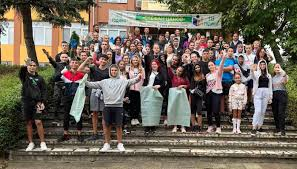
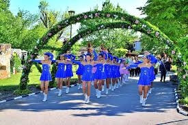
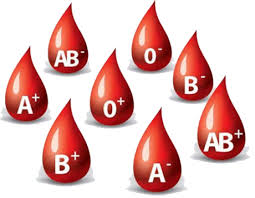
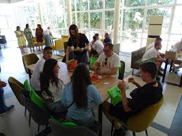

School Renovation Completed

The renovation of the primary school in Knezha has been completed ahead of schedule.
New classrooms, modern lighting, and accessible restrooms have been added.
The school now meets all EU safety and energy efficiency standards.
Public Garden Opens to Visitors

A new public garden was opened this week next to the cultural center.
It includes walking paths, benches, and a flower exhibition maintained by volunteers.
Entry is free and open daily from 7:00 AM to 9:00 PM.
Blood Donation Campaign This Friday

A mobile blood donation unit will be stationed in front of the municipality building on Friday.
The campaign is organized by the Red Cross and aims to support regional hospitals.
All donors will receive health checkups and small thank-you packages.
Youth Debate Club Launched

The Youth Debate Club launched its first session this week at the community center.
Open to students aged 13–19, the club meets every Wednesday and discusses current topics
while developing public speaking and critical thinking skills.